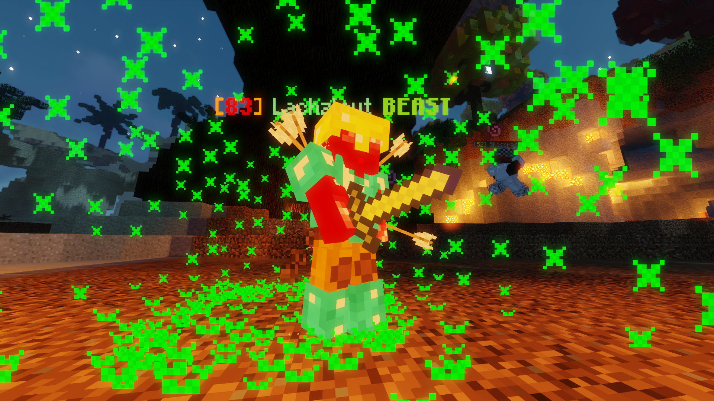

|  |
| A player becoming a beast. |
Beast is a major event in the Hypixel Pit. Like all major events, when it occurs, 3 minutes advance warning is given. Beast lasts for 5 minutes.
When a Beast event starts, three random players are chosen to be beasts. If a player kills the beast, they become a beast. Beasts are given a diamond chestplate with Protection II, diamond leggings with Fire Protection V (if they are not wearing Mystic Pants), diamond boots with Projectile Protection V, and a diamond sword. Placement is determined by how many beasts a player killed and how many players they killed as the beast.
During Beast, the following gameplay changes take effect:
Additional rewards that players can earn during Beast:
Prior to a patch in late 2021, the Golden Heart mystic could be used to survive for an extended period of time as Beast.